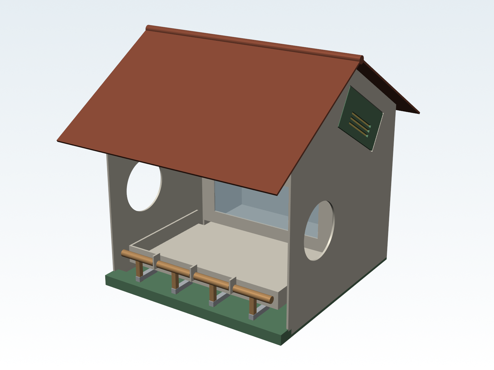
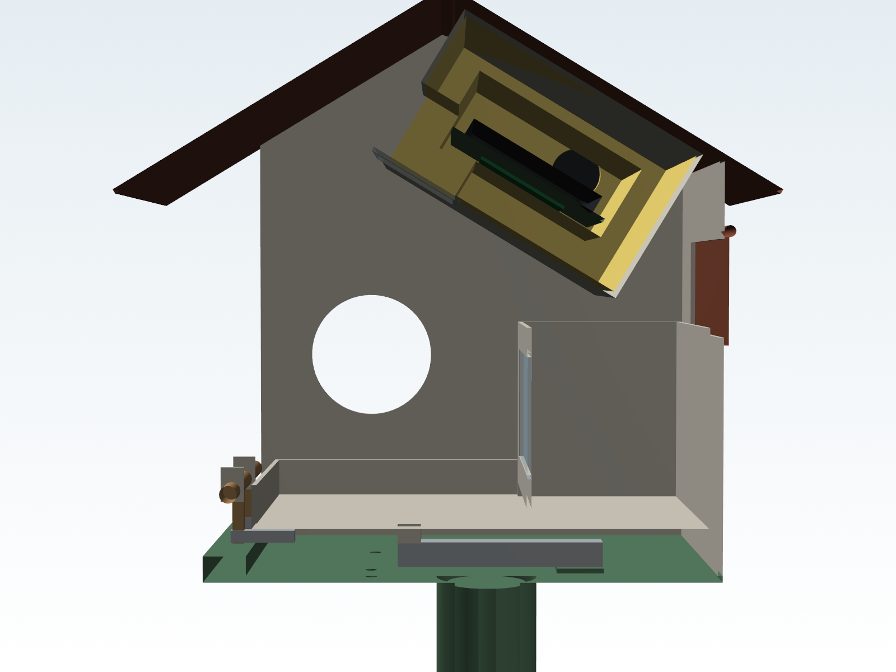
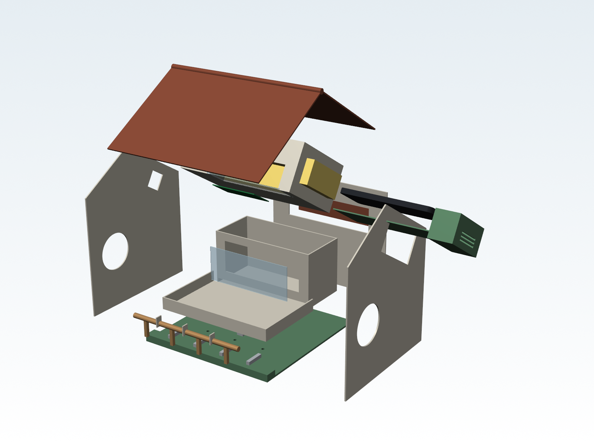
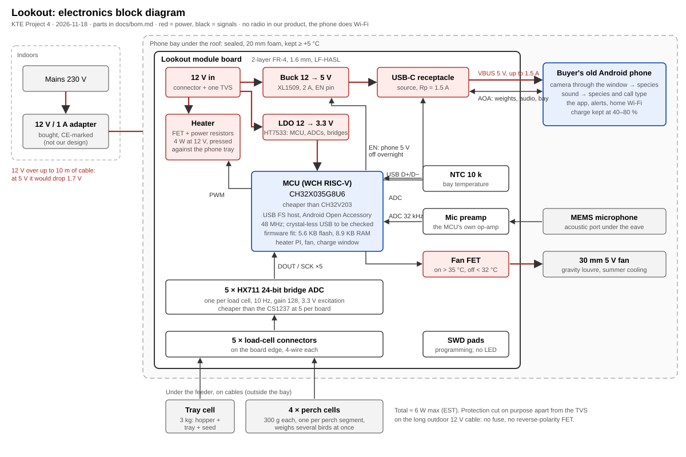
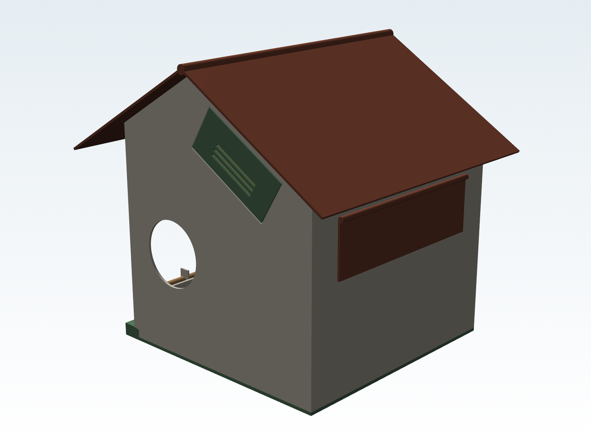
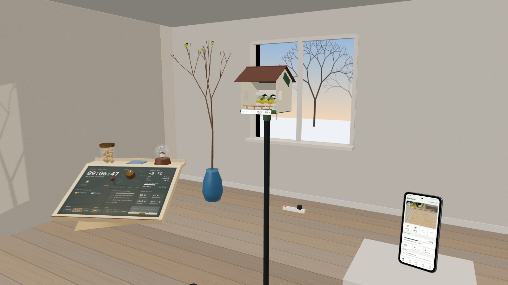

KTE · Projekt 4
Chytré krmítko, které pozná, zváží a uslyší ptáky. Mozkem je starý telefon. Bez cloudu a bez předplatného.
Bc. Marek Mach · listopad 2026


Řez: telefon v zateplené přihrádce, kamera míří oknem na misku

Rozložený model: střecha, přihrádka s telefonem, zásobník, miska, bidýlka

Jedna deska 90 × 50 mm v přihrádce u telefonu. Šipkou projdu tři bloky.
Adaptér 12 V doma, až 10 m kabelu. Při 5 V by kabel ztratil 1,7 V.
Měnič 12 → 5 V nabíjí telefon (1,5 A), LDO 3,3 V pro MCU a váhy.
Jediná ochrana: TVS dioda na vstupu.
CH32X035 (RISC-V, 0,27 $) je USB host: AOA k telefonu.
V noci vypne telefonu 5 V, baterie drží 40–80 %.
Firmware: 5,6 KB flash, 8,9 KB RAM.
5 × HX711, 24 bit: miska 3 kg a 4 bidýlka po 300 g.
Mikrofon přes vlastní operační zesilovač MCU, 32 kHz.
NTC řídí topení (≥ +5 °C) a ventilátor (> 35 °C).
Lisovaný domeček z ASA, stěny 2,5 mm, 300 × 330 × 302 mm, prázdný 2,0 kg. Telefon leží v šuplíku pod střechou, obalený 20 mm pěny.
4 W
topení: přihrádka ≥ +5 °C i při −25 °C
52 → 38 °C
v létě bez ventilátoru a s ním (35 °C ve stínu)

Zezadu: šuplík pro telefon a klapka na doplnění semínek
Každé bidýlko má vlastní váhu: dvě koňadry, 18,5 g a 18,4 g
Deska
2,51 $
60 součástek, živé ceny LCSC při 1 000 ks
Mimo desku
14,30 $
z toho tenzometry 10,80 $ (odhad)
Cíl v obchodě
50–55 €
bez předplatného (odhad)
| Konkurence (vlastní kamera a Wi-Fi) | Cena | Předplatné |
|---|---|---|
| Bird Buddy 2 | 199 $ | 59,99 $ / rok |
| Birdfy Feeder Rookie · Feeder 2 · 2 Duo | 109,99–329,99 $ | AI částečně placená |
Kusovník: LCSC 2026-11-18. Konkurence: prodejci a recenze, 2026-11-16.

Smíšená realita: krmítko v životní velikosti v pokoji, s konzolí a telefonem
Simulátor se připojuje…
Na tomto PC spusť start-simulator.bat (běží na http://localhost:8765/).
Smíšená realita se připojuje…
Na tomto PC spusť start-mumr.bat desktop (běží na http://localhost:8766/view.html), nebo start-mumr.bat pro brýle (https, port 8443).
2,51 $ deska · 16,81 $ elektronika · cíl 50–55 €
Žádné rádio, žádný cloud, žádné předplatné
Ověřeno v simulaci. Další krok: nabíjení přes AOA na skutečných telefonech.